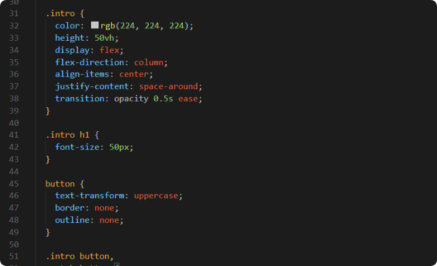

PoC - Project 1
Rock Paper Scissors
Ik heb de PoC gemaakt om een begin met JavaScript te maken, dit heb ik gedaan door op CodeAcademy ten eerste de basis van JavaScript door te nemen en vervolgens een tutorial op YouTube te volgen hoe je een Rock Paper Scissors eigenlijk bouwt met behulp van JavaScript, HTML en CSS. Ook zijn er bepaalde animaties in deze game gebruikt.
Totstandkoming
Aangezien ik de Rock Paper Scissors game volgens een tutorial heb gemaakt heb ik gewoon de stappen op chronologische wijze gevolgd, en aangezien dit bij HTML & CSS begon, heb ik eerst de HTML voor mijn game gecreëerd. Dit was geen probleem voor mij aangezien ik al het een en ander van HTML & CSS afweet. De template van de site in CSS is hetzelfde als de video, maar ik heb de vormgeving zelf allemaal gewijzigd. Dit was onder andere een ander lettertype, achtergrond, buttons en animations. Dit heb ik aan hand van mijn eigen huisstijl gedaan, en ik heb ook de site verfijnd. Eerst was het heel concrete en zat er weinig CSS in verwerkt.

JavaScript
Aangezien ik nog nooit eerder had gewerkt met JavaScript was het heel wat uitvogelen voor mij. Ik volgde natuurlijk een tutorial maar ik wou ook weten wat precies wat deed en dus moest ik op gegeven momenten bepaalde functies opzoeken, de tutorial was in principe erg duidelijk. Hij legde alles ook uit maar soms was er niet genoeg diepgang in de uitleg. Ik heb o.a. functies zoals .addEventListener leren gebruiken en hoe je bepaalde variabelen (const) aanmaakt en oproept.
Het spel kan gespeeld worden door bovenaan op de 'Play Game' game button te klikken en de code kan bekeken worden door op de 'Ga naar GitHub' knop te klikken.
Feedback
Als feedback heb ik te horen gekregen dat het allemaal goed werkte, de style in CSS was ook duidelijk verfijnd. Over de code inhoudelijk zelf heb ik te horen gekregen dat er nog verbeterpunten zijn. Natuurlijk heb ik de code gewoon vanuit de YouTube-tutorial gevolgd, dus alles klopte wel, maar er werden moeilijke functies gebruikt, die ik beter zou kunnen vermijden op dit niveau, zei Bernd-Jan. Voor de rest was de HTML/CSS in orde en gaf het spel een fijne speelervaring.
Wat heb ik geleerd?
Aangezien ik nog nooit eerder had gewerkt met JavaScript was het heel wat uitvogelen voor mij. Ik volgde natuurlijk een tutorial maar ik wou ook weten wat precies wat deed en dus moest ik op gegeven momenten bepaalde functies opzoeken, de tutorial was in principe erg duidelijk. Hij legde alles ook uit maar soms was er niet genoeg diepgang in de uitleg. Ik heb o.a. functies zoals .addEventListener leren gebruiken en hoe je bepaalde variabelen (const) aanmaakt en oproept.